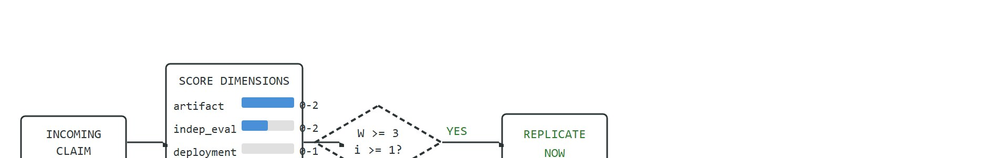

"Every frontier claim becomes calmer after you ask for the artifact."
A Watchlist With A Clipboard
This section assumes familiarity with the sense-perceive-estimate-plan-control loop introduced in section 3.1 and with the evaluation discipline developed in section 52.5 and section 52.6. The frontier-watch protocol recurs in section 60.4, where it is embedded in a research-seminar course track, and the cross-embodiment claims evaluated here connect directly to the data-scaling discussion in section 24.1.
A robot generalization claim lands in your feed every week. Most arrive with a compelling video, a benchmark number, and no reproducible artifact. For embodied AI, this is not a minor annoyance: a deployment decision made on a claim that later fails to replicate can ground a real robot fleet or delay a safety review by months. Frontier Watch is a disciplined response: score every release on artifact availability, independent evaluation, and deployment evidence before it changes your roadmap. You will build and apply that scoring protocol here, walk through a two-step RT-2 timeline that shows what a claim looks like before and after replication evidence arrives, and leave with a tool you can run on the next headline that crosses your desk.

A robot in a launch video folds a shirt it has never seen, the demo goes viral, and three months later not a single outside lab can make the released checkpoint do the same thing: that gap between the headline and the reproducible artifact is exactly what a watch score is built to measure. Figure 58.99B traces the full pipeline that the rest of the section unpacks: an incoming claim is scored on four dimensions into a composite watch score $W$, which a two-condition gate then routes to either active replication or the watchlist.
The key question in Frontier Watch is practical: what must the agent know, what can it observe, what action is available, and what evidence shows that the action worked under the stated conditions? The scale of the problem is concrete: informal tracking suggests that of the roughly 50 robotics preprints posted each month (as of 2024), typically fewer than 5 release an independent eval script, which means that the replication rate for frontier claims appears to hover near 10% at launch, rising only after the community adds its own artifacts.
Each of the four scoring dimensions introduced above maps directly onto a piece of evidence you can check today. Artifact asks whether weights, code, or an eval script were actually released alongside the claim. Independent evaluation asks whether a group outside the releasing lab has reproduced a number. Deployment evidence asks whether the capability was demonstrated on a physical robot outside a curated demo, as opposed to simulation only. Ambiguity is a penalty, not a positive score: it subtracts a point when the claim uses qualitative language ("significantly better") instead of a numeric baseline. The worked example below assigns exactly these four numbers to a real release.
Figure 58.99A turns that question into a lab habit: every release claim gets pinned beside its benchmark trace, reproducibility checklist, and verification status before it changes the roadmap.
Frontier watch should be judged by the action it improves. A section claim is strong when it names the decision, the measurement, and the failure mode before a larger model or simulator is introduced.
Naming the decision, the measurement, and the failure mode is only enforceable if those names are written down where another reader can check them, which is why the theory of frontier watch begins with the interface itself. For Frontier Watch, the practical design rule is to make the interface inspectable before optimization begins: inputs, outputs, units, latency, bounds, and failure labels should all be visible in the saved artifact.
The mechanism in Frontier Watch is the contract between representation and action. Name what enters the module, what leaves it, which assumptions make that transformation valid, and which log would reveal a bad handoff.
For Frontier Watch, keep one concrete rollout in view. A sensor reading becomes an estimate, the estimate constrains an action, the action changes the world, and the next observation confirms or contradicts the assumption, following the same sense-perceive-estimate-plan-control loop that governs every architecture in the book. The section's idea is useful only if it improves that loop.
Consider a concrete case: in late 2023, RT-2 (Brohan et al., Google DeepMind) was announced with a headline "can generalize to novel objects seen only in web images." A frontier-watch pass assigns artifact score 2 (weights not released, eval script not released), independent-eval score 0 (no third-party replication at launch), deployment-evidence score 0, ambiguity penalty 1 (success rate reported as "significantly better" with no numeric baseline). Watch score $W = 2 + 0 + 0 - 1 = 1$. Decision: watch-only. Six months later, Open X-Embodiment released aligned evaluation data. Independent groups then reported 54% vs. 38% task success on the Bridge subset (a WidowX-armed tabletop manipulation split within Open X-Embodiment, commonly used as a common yardstick across labs), which raised the artifact and independent-eval scores. The claim crossed the replication threshold. That two-step timeline, a low initial score and a higher score after artifacts landed, is the pattern frontier watch surfaces.
# Frontier watch score tracker: compute W = artifact + indep_eval + deployment - ambiguity
import numpy as np
# Each claim is a dict with four integer scores following the formula in the text:
# artifact: 0 (video only), 1 (weights only), 2 (weights + eval script)
# indep_eval: 0 (none), 1 (one third-party group), 2 (two or more)
# deployment: 0 (none), 1 (reported real-robot deployment)
# ambiguity: 0 (numeric baseline given), 1 (vague language, no numeric baseline)
# Replication threshold: W >= 3 with at least one indep_eval point.
claims = [
{
"name": "RT-2 (launch, Nov 2023)",
"artifact": 2,
"indep_eval": 0,
"deployment": 0,
"ambiguity": 1,
},
{
"name": "RT-2 (after Open X-Embodiment data, May 2024)",
"artifact": 2,
"indep_eval": 1, # independent groups reported Bridge subset numbers
"deployment": 0,
"ambiguity": 0, # 54 % vs 38 % task success now on record
},
{
"name": "Hypothetical model (strong artifact + deployment)",
"artifact": 2,
"indep_eval": 2,
"deployment": 1,
"ambiguity": 0,
},
]
REPLICATE_THRESHOLD = 3
print(f"{'Claim':<50} {'W':>3} {'Decision'}")
print("-" * 70)
for c in claims:
W = c["artifact"] + c["indep_eval"] + c["deployment"] - c["ambiguity"]
gate = W >= REPLICATE_THRESHOLD and c["indep_eval"] >= 1
decision = "REPLICATE" if gate else "watch-only"
print(f"{c['name']:<50} {W:>3} {decision}")
scores = np.array([
c["artifact"] + c["indep_eval"] + c["deployment"] - c["ambiguity"]
for c in claims
])
print(f"\nScore range: {scores.min()} to {scores.max()} | mean: {scores.mean():.1f}")Claim W Decision ---------------------------------------------------------------------- RT-2 (launch, Nov 2023) 1 watch-only RT-2 (after Open X-Embodiment data, May 2024) 3 REPLICATE Hypothetical model (strong artifact + deployment) 5 REPLICATE Score range: 1 to 5 | mean: 3.0
Trace the gate (W >= 3 AND indep_eval >= 1) through three concrete claims, computing every number by hand.
Claim 1, RT-2 at launch (Nov 2023): artifact = 2, indep_eval = 0, deployment = 0, ambiguity = 1. Sum the positives: 2 + 0 + 0 = 2. Subtract the penalty: W = 2 - 1 = 1. Gate check: W = 1 is below 3, so the threshold fails before we even test indep_eval. Decision: watch-only.
Claim 2, RT-2 after Open X-Embodiment (May 2024): artifact = 2, indep_eval = 1, deployment = 0, ambiguity = 0. Positives: 2 + 1 + 0 = 3. Penalty: W = 3 - 0 = 3. Gate check: W = 3 meets the 3 threshold, AND indep_eval = 1 meets the 1 requirement. Both conditions true. Decision: REPLICATE.
Claim 3, hypothetical strong release: artifact = 2, indep_eval = 2, deployment = 1, ambiguity = 0. Positives: 2 + 2 + 1 = 5. Penalty: W = 5 - 0 = 5. Gate check: 5 >= 3 and 2 >= 1, both true. Decision: REPLICATE. Notice that Claim 2 and Claim 3 both replicate, but Claim 1 fails purely because the single ambiguity point dropped a borderline 2 down to 1.
When computing the watch score $W$, apply the ambiguity penalty before deciding whether to replicate: a paper that reports "significantly better" without a numeric baseline automatically loses 1 point, regardless of artifact quality. In practice, set a replication threshold of $W \geq 3$ and require at least one of the three positive terms to come from an independent evaluator rather than the releasing lab. This two-condition gate catches the common case where a polished codebase release (artifact score 2) earns a borderline $W = 2$ because no outside group has run the benchmark yet.
A common misreading is that a watch score at or above the replication threshold (W ≥ 3) means the claimed capability generalizes across hardware, scenes, or embodiments. That reading is wrong: a high score confirms only that the evidence for the specific tested configuration is reproducible, not that the method transfers. In embodied AI, generalization is a separate empirical question because sim-to-real gaps, sensor layout differences, and contact-rich dynamics each introduce failure modes that a replication study on the original hardware cannot surface. The correct mental model is: treat a passing watch score as a green light to invest engineering time in a controlled replication on your own platform, not as proof that the claim will hold there.
For Frontier Watch, keep the small contract as the inspectable interface, then use OpenVLA, SmolVLA, GR00T, Gemini Robotics, or pi-zero-family tools without changing logging or replay fields.
Because a passing watch score only licenses a controlled replication on your own platform, the steps below lay out exactly how to run that replication so the scoring discipline turns into reproducible engineering practice.
Think of the sim-to-real gap like perfecting a recipe in a test kitchen that has precise electric burners and pre-measured ingredients, then cooking the same dish over a gas flame with a warped pan and hand-pinched spices. Every step that worked cleanly in the controlled setting now introduces small deviations: uneven heat, residue on the pan, salt that clumps differently in humidity. None of these deviations breaks the dish alone, but they compound across each step until the final result drifts well outside what the recipe predicted. A policy that looks strong in simulation faces exactly this accumulation: each contact event, each sensor reading, each motor command lands slightly off from the training distribution, and the errors stack rather than cancel.
A policy that works in simulation but fails on hardware is not a policy; it is an aspiration that has not yet met friction.
The common mistake in Frontier Watch is to trust a component score before checking the closed-loop interface. The failure usually appears where state, timing, authority, or evaluation context crosses a module boundary.
A team using Frontier Watch starts by writing the task panel, not by picking the largest model. They keep a baseline run, a maintained-tool run, and a perturbation run in the same result folder. The comparison is accepted only when the action trace, metric, and failure labels come from one script.
Hugging Face's LeRobot project applies frontier-watch logic in public: model cards and the associated benchmark dashboards separate first-party demo videos from independently reproduced task-success numbers, and a checkpoint is only promoted on the leaderboard once an outside run reproduces its score. This is the artifact-plus-independent-eval gate operating as live infrastructure rather than a private spreadsheet.
For frontier watch, the useful test is simple: could a teammate point to the log line, plot, or trace that proves the idea changed the agent's next action?
Three active directions are shaping what frontier watch must track in 2024-2026.
Generalist robot policies at scale. Large vision-language-action models trained on hundreds of robot hours are now publishing reproducible benchmarks. Physical Intelligence's pi0 (Black et al., 2024) demonstrated flow-matching diffusion policies (where flow matching is a continuous generative technique that learns a velocity field carrying noise to actions, a faster-to-sample cousin of standard diffusion) on a dexterous manipulation suite and released a public eval protocol; independent groups have begun reporting replication scores. The watch question is whether per-task success rates hold as scene diversity grows beyond the training distribution.
Cross-embodiment transfer with shared tokenization. Tokenization here means converting a continuous action, a joint angle or gripper position, into one of a fixed vocabulary of discrete symbols, the same trick language models use for words, so that a single model can be trained on robots with different action spaces. Octo (Team Octo, UC Berkeley, 2024) and subsequent work treat robot actions as discrete tokens learned across morphologies. The open question is the transfer gap: how much fine-tune data is needed on a new embodiment before the pre-trained backbone stops being a liability? Early cross-embodiment fine-tuning experiments (Berkeley Bridge v2, 2024) suggest the answer is stark: in these reported settings, adapting to a new robot morphology without a shared backbone typically requires roughly 500 demonstration episodes to reach the same task-success rate that a pre-trained cross-embodiment model reaches with 20, a 25x data cost that makes the "liability" question very concrete for labs without large data budgets, though the ratio should be expected to vary with task and hardware. Frontier-watch scoring must now include a cross-embodiment hold-out dimension that most 2023-era papers omitted.
So far: generalist policies like pi0 are shipping reproducible benchmarks, cross-embodiment models like Octo use shared action tokenization to cut the data cost of adapting to a new robot, and both trends feed directly into the artifact and independent-eval dimensions of the watch score; the next direction looks at how evaluation benchmarks themselves get standardized.
Reproducible long-horizon evaluation benchmarks. BEHAVIOR-1K (Li et al., Stanford, 2024) and RoboVerse (2025) have proposed standardized household task suites with automated success detection, directly enabling the independent-eval dimension of the watch score. The open frontier is aligning these simulation benchmarks tightly enough with real hardware that a simulator score predicts physical task success within 10 percentage points.
Open problem for a PhD student: Design an automated frontier-watch auditor that ingests an arXiv robotics paper, extracts the claimed success metric and experimental conditions from the text, queries public code repositories and benchmark leaderboards for corroborating artifacts, and outputs a structured watch score with a confidence interval. The core technical challenge is grounding free-text capability claims to measurable, scene-specific evaluation conditions without human annotation of each paper.
For Frontier Watch, can you name the observation, action, protected assumption, success metric, and one likely failure case? If any field is vague, rewrite the contract before adding model complexity.
Frontier-watch work preserves judgment while the field moves fast. Treat every model release, simulator announcement, and benchmark number as a hypothesis that must clear the same evidence filter as an internal experiment.
Without that filter, teams end up rewriting roadmaps around marketing velocity. A lightweight protocol keeps novelty, accessibility, and scientific support distinct while tracking frontier claims.
Frontier Watch becomes actionable once the reader can state the operative variables, the decision boundary, and the evidence artifact. The section should therefore be read together with Section 60.4 on the research-seminar track and Chapter 52 on evaluation discipline, where the same loop is developed from adjacent angles.
Assign each claim a watch score $W = s_{\text{artifact}} + s_{\text{independent eval}} + s_{\text{deployment evidence}} - s_{\text{ambiguity}}$. High scores indicate claims that merit replication or curricular inclusion; low scores stay on the watchlist until more evidence arrives.
The watch score is intentionally simple. It does not certify truth; it helps the lab decide which frontier claims deserve engineering time this month and which ones should remain annotated links in a reading list.
| Dimension | What To Specify | Why It Matters |
|---|---|---|
| Claim | What capability or benchmark improvement is being advertised | Prevents vague enthusiasm from spreading across the lab. |
| Artifact | Weights, code, logs, eval script, or only a video | Determines whether replication is even possible. |
| Independent support | Third-party benchmark, user report, or deployment note | Separates launch theater from scientific traction. |
| Decision | Teach now, replicate now, or watch only | Turns the watchlist into action. |
The expected output is a judgment record. A frontier-watch item is useful only if another reader can see why the claim stayed on the watchlist instead of being promoted into the main build path.
After the from-scratch contract is clear, the practical route uses GitHub release trackers, arXiv alerts, benchmark dashboards, internal replication sheets, issue trackers. The payoff is that standard interfaces, logging, batching, and replay support move from ad hoc glue code into maintained infrastructure, while the evidence schema stays the same.
A lab lead can turn this section into a weekly five-minute ritual: one team member presents a new frontier claim, another checks artifacts and independent support, and the group decides whether it is integrate-now, replicate-now, or watch-only material.
The meta-frontier is evaluation literacy. As embodied AI moves faster, the scarce skill is not finding announcements, it is deciding which ones deserve integration into real systems, courses, and research agendas.
For Frontier Watch, the printed artifact should identify the open technical uncertainty, the evidence already available, and the next experiment or design review that would make the frontier claim testable.
Beginner (weekend): Personal frontier watchlist tracker. Build a Python script using Gymnasium that loads a CartPole environment, runs a fixed policy as a scripted baseline, and logs task-success rate alongside a manually entered watch score for one VLA paper you find on arXiv; the key challenge is defining a reproducible success metric that a classmate can replicate from your log file alone. Intermediate (1 to 2 weeks): Sim-to-real gap measurement with PyBullet and a UR5. Implement a pick-and-place task in PyBullet (or MuJoCo, which is the more actively maintained choice as of 2024), record task-success rate under object pose perturbations up to 5 cm, then replay the same policy on a physical UR5 via ROS2 and measure the gap; the key challenge is aligning the coordinate frames and contact parameters between the simulator and hardware so that a failure tagged as a state-estimation error in PyBullet maps to the same failure mode on the real arm. Advanced (3 to 4 weeks): Cross-embodiment frontier eval with LeRobot and Isaac Lab. Use LeRobot to fine-tune a small VLA checkpoint on a manipulation task in Isaac Lab, score the released model's watch score at launch, replicate the evaluation on a second robot morphology available in Isaac Lab, and report how the score changes when independent-eval evidence from your own run is added; the key challenge is building an evaluation harness in Isaac Lab that matches the original paper's sensor layout and success criterion closely enough to constitute a genuine independent evaluation rather than a confounded comparison.
Goal: Turn the W = artifact + indep_eval + deployment - ambiguity formula into a working triage tool and feel how sensitive the replicate/watch-only decision is to scoring rules.
Tools needed: Python with the arxiv and requests libraries (or just a browser). Pull the five most recent papers from the arXiv cs.RO listing that announce a robot policy or VLA model.
Procedure (15 to 30 minutes): For each paper, score the four dimensions by hand using the rubric in Code Fragment 58.99.1: artifact (0 video only, 1 weights only, 2 weights plus eval script, found by checking the linked GitHub repo), indep_eval (0, 1, or 2 from searching for third-party replications or leaderboard entries), deployment (0 or 1 for a reported real-robot run), and ambiguity (1 if the headline result lacks a numeric baseline). Feed the dicts through the script from the worked example.
What to vary: Re-run the batch with REPLICATE_THRESHOLD set to 2, then 4. Also try dropping the indep_eval >= 1 side condition.
What to observe: How many papers flip from watch-only to REPLICATE as the threshold moves? Which decision changes are driven by the ambiguity penalty alone? You should find that the indep_eval side condition is what stops a polished-but-unreplicated codebase (artifact 2, everything else 0) from earning a replicate decision, the exact failure the gate is designed to catch.
Design a method-matched experiment for Frontier Watch. Specify the environment, observation schema, action interface, metric, and one perturbation that targets the section's core assumption.
Bardes, A. et al. Revisiting Feature Prediction for Learning Visual Representations from Video. arXiv, 2024.
Use for V-JEPA-style predictive representation learning, where V-JEPA is a self-supervised video model that learns by predicting masked feature embeddings rather than raw pixels, and the limits of passive video priors.
Open X-Embodiment Collaboration. Open X-Embodiment: Robotic Learning Datasets and RT-X Models. arXiv, 2023.
Use for cross-embodiment data scaling, RT-X evaluation, and dataset-standardization claims.
Next, move to Chapter 59, where the same evidence discipline is applied at the next scale.